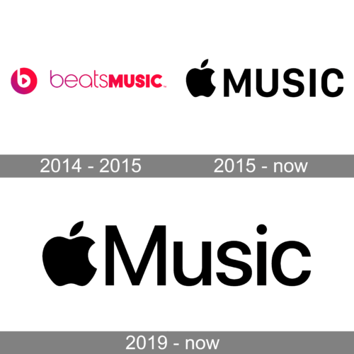

Apple's Unique Approach to Music Discovery
Apple Music combines human expertise with advanced AI to create a unique recommendation system that balances algorithmic precision with human curation.
Human Curation
Apple Music's approach starts with expert human curation:
- Professional music editors
- Genre specialists
- Cultural experts
- Local market knowledge
Data-Driven Analysis
The platform then uses sophisticated AI to analyze several streams of information:
- Listening history
- Library additions
- Playlist interactions
- User preferences